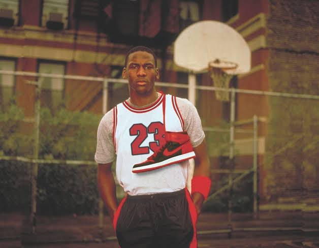
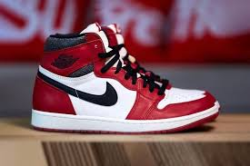
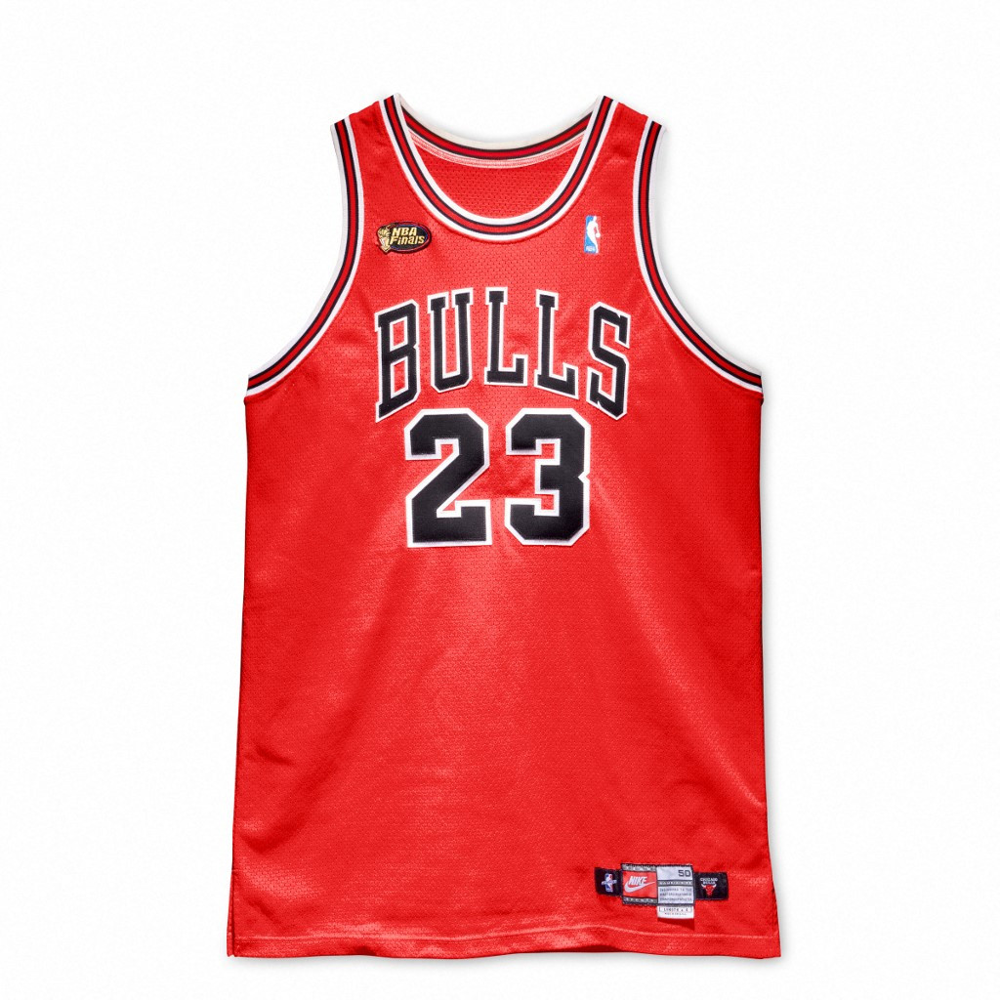

The Jordan Brand is one of the most recognisable names in sports and fashion.
It began in 1984 when Nike partnered with Michael Jordan to create his own
signature basketball shoe. The partnership quickly became successful, helping
turn Jordan's name into a major brand beyond the basketball court.
The first Air Jordan was released in 1985 and quickly became popular with
basketball fans and sneaker collectors. Each new model introduced different
designs and technology while maintaining a strong connection to Michael Jordan.
The shoes also helped make basketball sneakers an important part of streetwear
and popular culture.
In 1997, Jordan Brand became a separate division of Nike, allowing the brand
to expand beyond its original basketball shoes. It began producing a wider
range of footwear, clothing, and sports products while continuing to use the
famous Jumpman logo. The brand grew into an important part of Nike's business
and became recognised around the world.
The Jordan Brand has had a lasting influence on basketball, fashion, and
sneaker culture. The Jumpman logo and Air Jordan designs have become closely
associated with Michael Jordan and his career. Even decades after the first
Air Jordan was released, the brand continues to connect Jordan's legacy with
new generations of fans and athletes.


